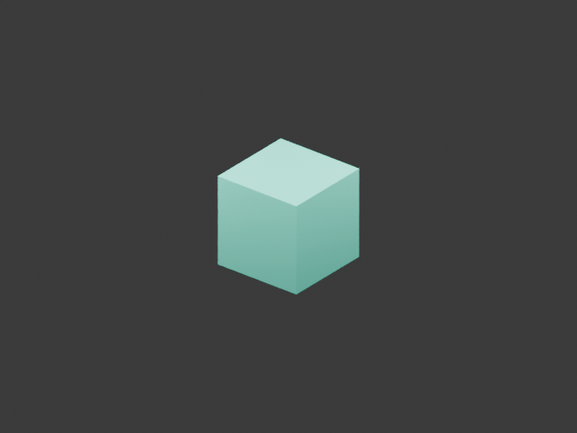
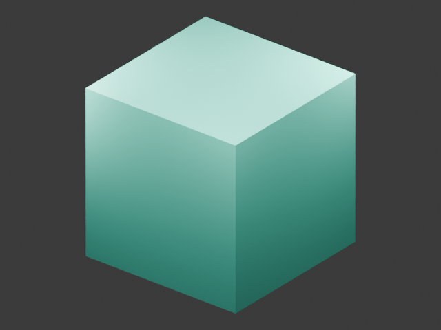

The edit changed.
What happened to the result?
Declare area, volume and topology invariants. Measure evaluated geometry. Test each recorded edit alone, then verify the combined result in a clean Blender process.
Get the Blender add-onExplore the experiment
A closed cube, generated by Geometry Nodes. Captured numerical contract: preserve topology; area and volume ratios remain in [0.8, 1.2].

GN scale 2 × object scale 1.25. Same camera and lighting. The scene remains plausible, but both declared numerical limits fail.
These are original synthetic Blender CPU renders, not panel screenshots. They illustrate the measured geometry; no render-equivalence claim is made.
Two changes. Nonlinear consequences.
The child process actually evaluates each edit alone against the same hashed baseline. A larger volume cannot be attributed by adding scale percentages.
Browser values use V = 8 × (GN scale × object scale)³ and A = 24 × (GN scale × object scale)². Native replay independently measures 64 and 15.625 for the isolated volumes and 125 for both edits.
A restored scene can still violate intent.
Undo, node snapshots and visual diffs tell you what changed or restore a previous state. They do not establish that the evaluated geometry retained its scientific contract.
A measured, bounded experiment.
The sidebar reports ratios, topology changes, declared operations and unsupported dependencies. The replay package checks baseline, build and asset identities before evaluating counterfactuals.
Use it inside Blender
- Capture. Select a mesh, choose a workspace, declare numerical intervals and save a baseline copy.
- Edit. Change object scale or exposed constant scalar Geometry Nodes inputs.
- Measure. Inspect world-space area, volume, bounds, topology deltas and explicit violations in the Invariant Ledger sidebar.
- Verify. Launch a separate Blender process. It hashes dependencies, tests each declared edit alone, then compares the combined mesh summaries.
The complete evidence also appears as a Blender Text datablock. Unsupported cases are flagged; the add-on does not pretend that arbitrary graph, simulation or history edits are replayable.
Real Geometry Nodes. A different replay process.
Loading the published verification report…
Separately, 26 dependency-free tests check mesh closure/winding, disconnected component volumes, scale laws, malformed/nonfinite data, tolerance and restricted asset hashing. Native tests install and enable the actual ZIP and hash-match the installed source.
GUI limit: the panel and operators were registered/executed in the native headless host. Hidden-window screenshot attempts encountered a Blender access violation on this laptop; full GUI drawing remains unverified.
0.1.1: inspect inside the scene, too.
The original example retained local folder text inside compressed .blend metadata and stale image-filename padding. This release regenerates the owned synthetic fixture uncompressed and clears only bounded printable metadata/padding spans. It preserves block layout, relative assets and numerical state, then rechecks real clean-process replay.
Read the exact sanitation report. This release-only helper is not a general user-scene scrubber. Normal add-on capture remains unchanged.
What counts as a replay match?
| Checked | What it establishes |
|---|---|
| Exact Blender build + baseline SHA-256 | The experiment starts from the pinned application and scene copy. |
| Image/cache identities | Persistent file-backed images, packed images and one declared cache file match recorded bytes; external paths outside the workspace are flagged without reading them. |
| Counts, components, Euler and boundary summary | The selected evaluated mesh has matching discrete summaries. |
| Area, volume and axis-aligned bounds | The numerical summaries agree within 1e-6 tolerance. |
These summaries do not prove full mesh equality, physical correctness, simulation replay or render equivalence. Different shapes can share the same summaries. That remaining gap is stated in each replay result.
A layer above existing history tools
Native undo, NodeSync, persistent Undo History and Blender Bridge already cover much history, diff and checkpoint functionality. This add-on focuses on numerical contracts and bounded counterfactual evidence.
Read the source-based comparison. The tested source/API route did not require binary reverse engineering.
Blender 5.2 moved GN modifier values to modifier.properties.inputs. This implementation was corrected against the actual portable host and matching public source, not older API assumptions.